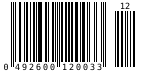

Feed //
your.handle3/7
your.handle No. 012, Транзит. A week between places, seven frames … more
Slide 3/7
BRD
Zine // T1
 4, 5
4, 53
 2
26
 7
7Spent the week in airports and on night buses. Shot everything on the one roll I had. Не спиев многу.

ТранзитNo. 01211.2026
FoldCut ✂Trimmed off (6 mm)Page 3 ↔ slide 3
Spread 2–3
BRD